The Workshops
One tradition, one teacher—master artists from across India, taught hands-on across the weekend.
 A Bollywood CompanyGhent · Belgium
A Bollywood CompanyGhent · Belgium
Every spring · Ghent, Belgium
Three days of Indian dance in Ghent.
Workshops, a gala showcase and an opening party.
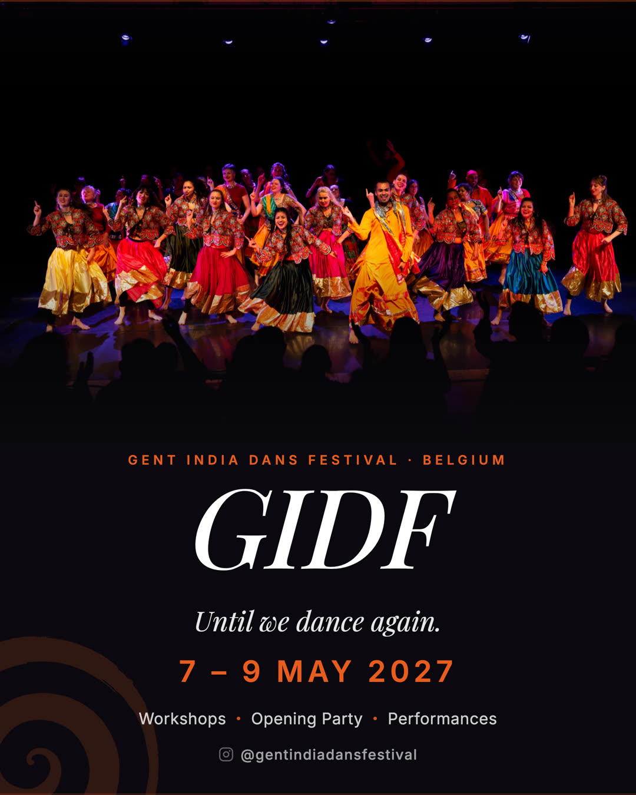
The next edition
7—9 May 2027
Until we dance again. Faculty, the day-by-day programme and tickets will be announced as Edition Five takes shape.
Curated by Swapnil Dagliya · Organised by ABC a bollywood company · Hosted at Shoonya Dance Centre, Ghent.
What is GIDF
It is Kalbeliya from the desert of Rajasthan. Chhau from Odisha. Lavani from Maharashtra. Kuthu from Tamil Nadu. Giddha from Punjab—each with its own history, community and way of moving through the world.
Every spring, GIDF brings these traditions to Ghent—not as performance alone, but as experience. You learn from teachers who carry the forms, watch them on stage and celebrate together into the night.
Three days. Master teachers from across India. One curious city.
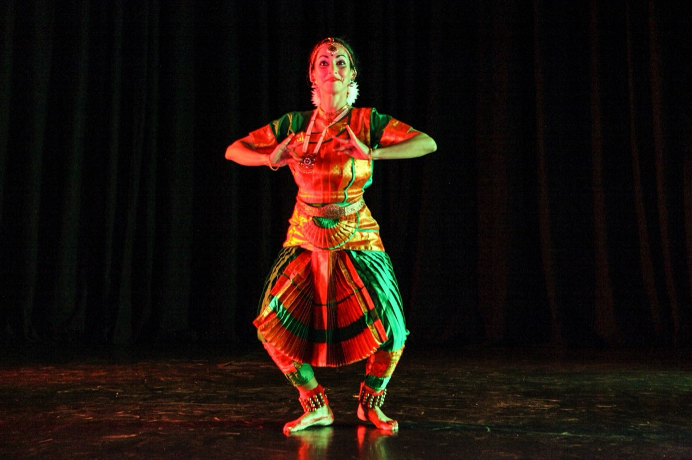
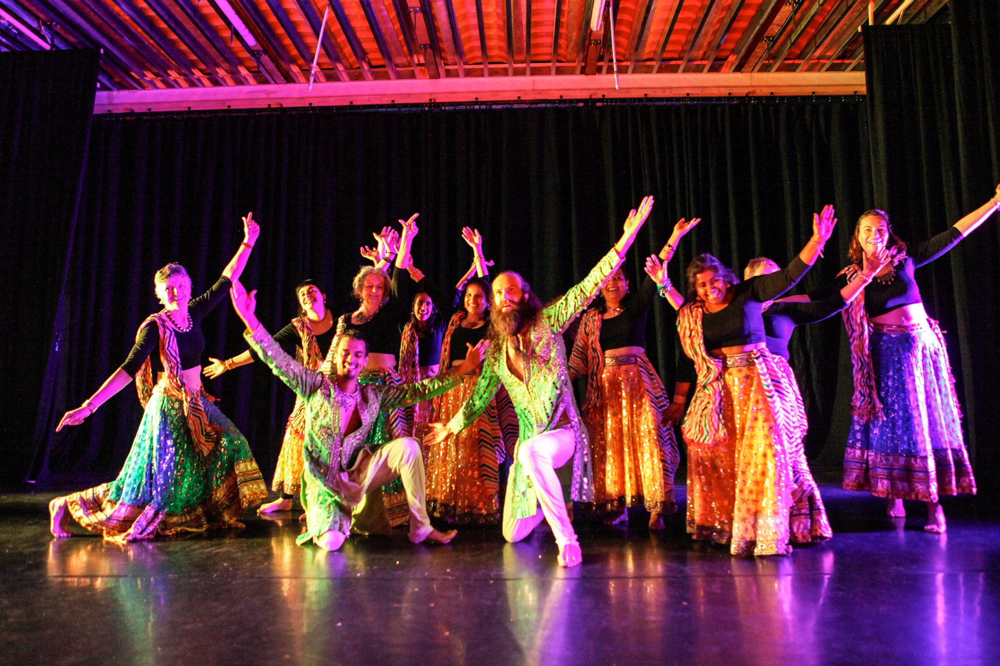
What to expect
Every edition is built from the same parts: workshops by day, a gala by night and a party to open it all.
One tradition, one teacher—master artists from across India, taught hands-on across the weekend.
A seated theatrical evening on the Shoonya stage with faculty, guest artists and ABC together.
A community class, live music, performances and a DJ until late—the night it all begins.
The teachers and performers who carry their traditions to the GIDF floor and wider European scene.
The Gala Showcase
The gala showcase: guest artists, students and ABC on one stage. Twelve performances from four editions, 2023 to 2026.
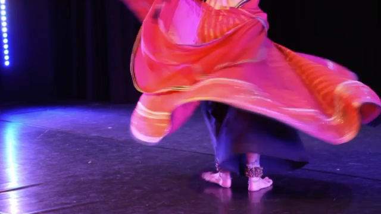
RajasthaniColleena Shakti · GIDF 2026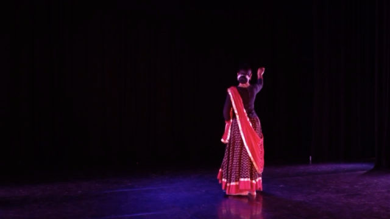
KathakVanisha · GIDF 2024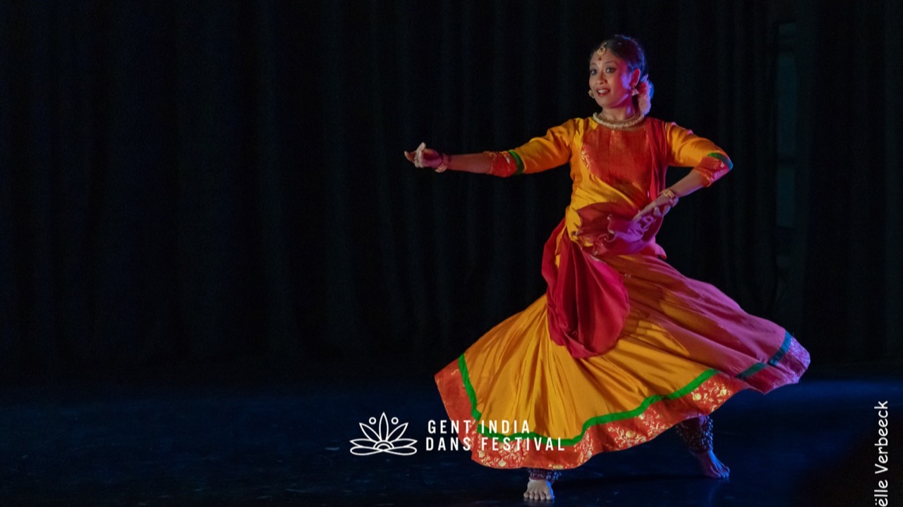
SoloShreyashee Nag · GIDF 2023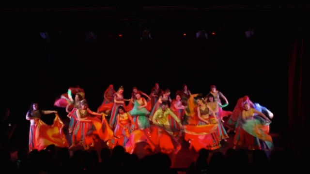
Madhuri MedleyBollywood students & ABC · GIDF 2026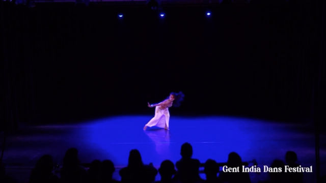
SoloShampa Gopikrishna · GIDF 2025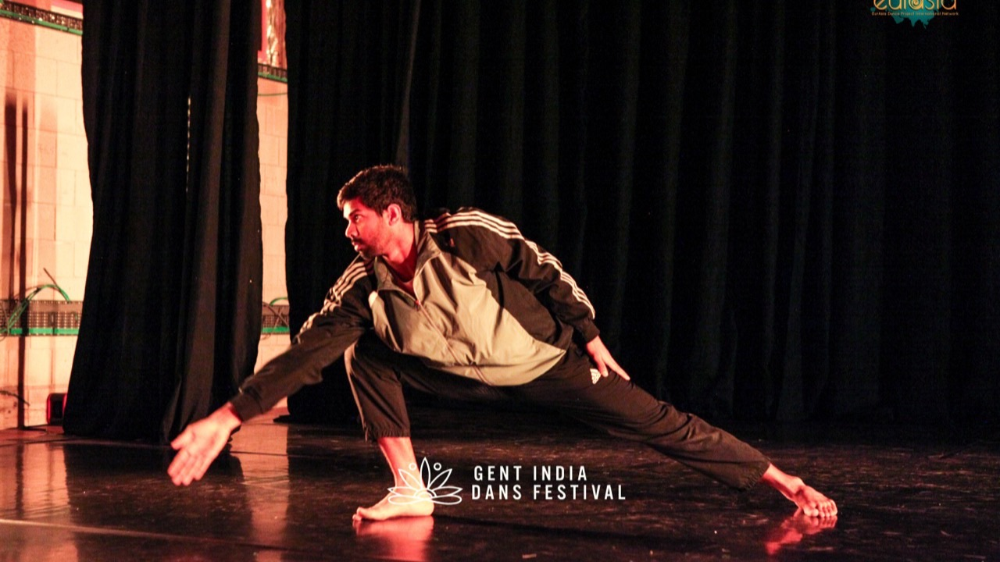
SoloGirish Kumar · GIDF 2023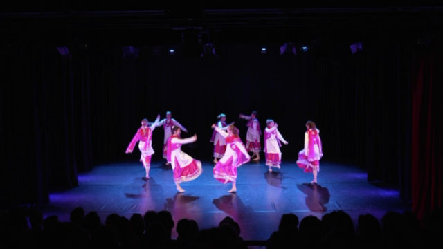
BhangraBhangra students · GIDF 2026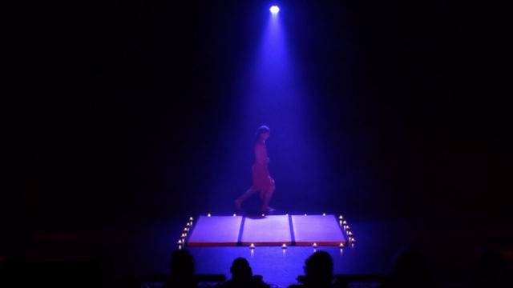
SoloJulien · GIDF 2024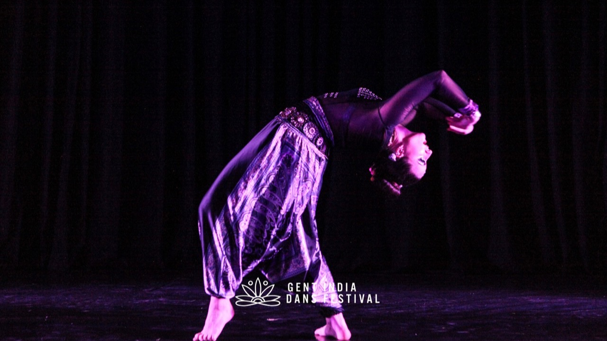
SoloJana Jayanti · GIDF 2023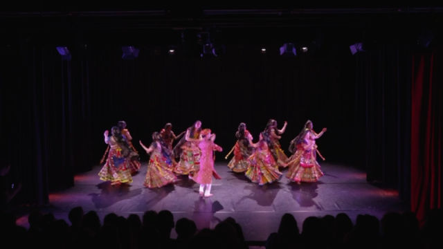
GhoomarBollyfolk students · GIDF 2026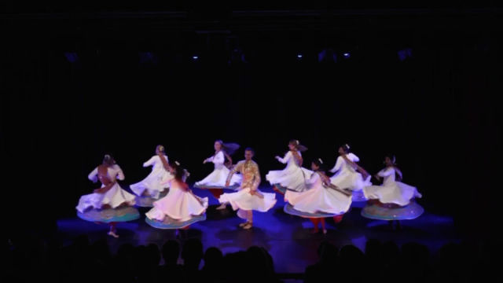
Semi-classicalABC · GIDF 2026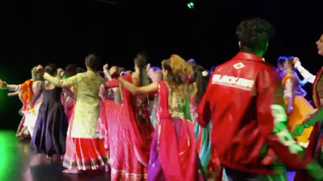
Grand FinaleGIDF 2026The small traditions
On the floor · On the stage

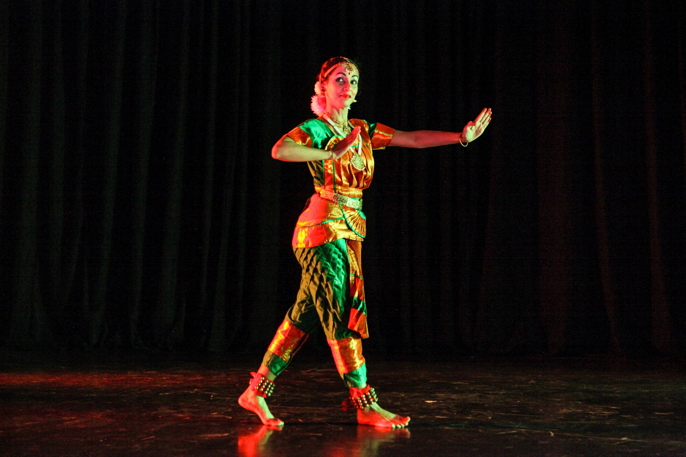
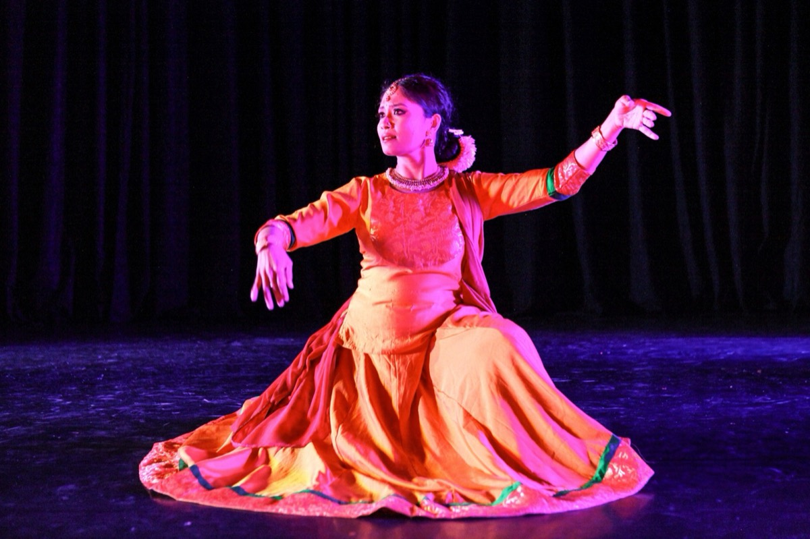
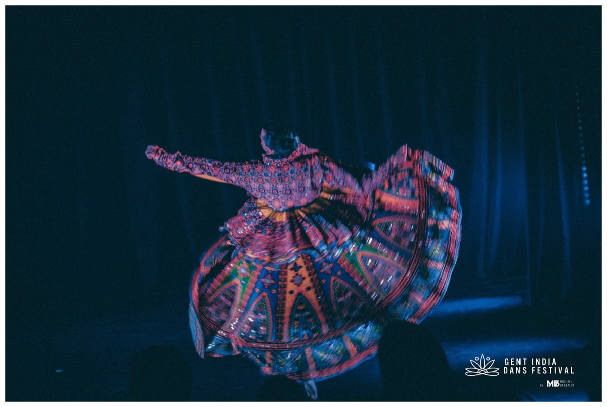
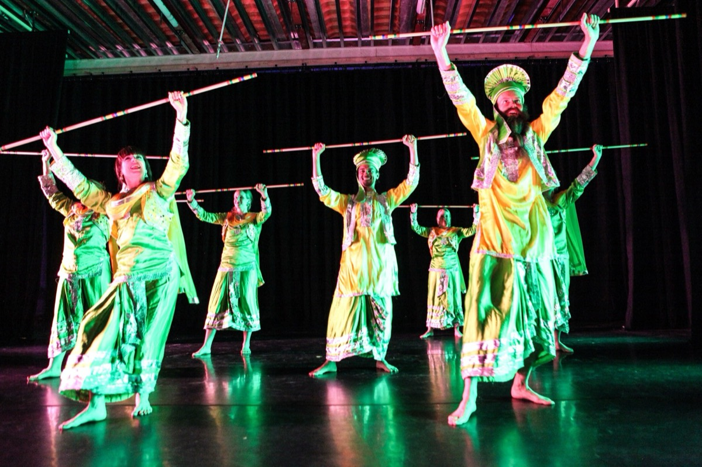

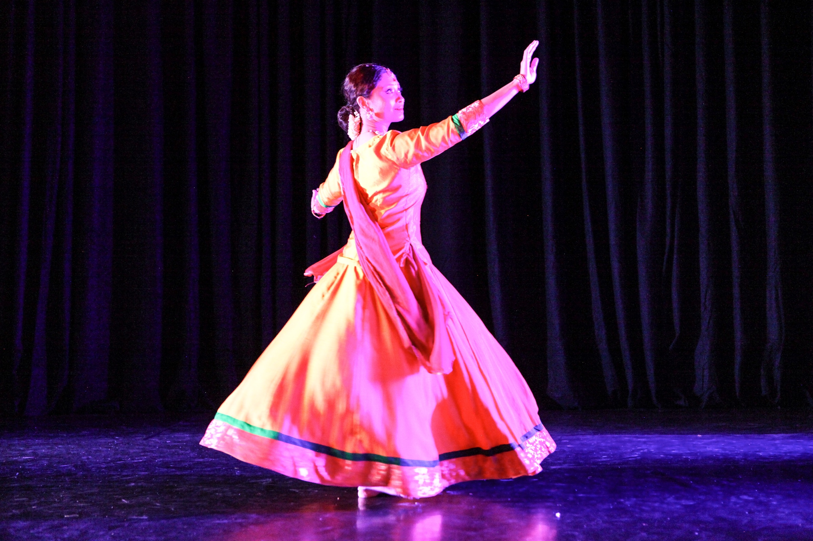
Festival photography · Stijn Dejonckheere · Michael Backaert · Jan Vens
Past editions
Ghent’s annual festival of Indian dance since 2023—workshops, showcases, an opening party and a community that keeps returning.
From Bharatanatyam to BollyHop, from Punjab’s Bhangra to North India’s Kathak: the first edition made the proposition clear—Indian dance in its breadth, not narrowed to one school.
A precision form rarely taught in Belgium joined the line-up. The festival aimed deeper, not only wider, and learned its first lessons in international logistics.
The first community class opened GIDF to new people. The class stayed, the competitions did not, and Shampa—kept away by a visa the year before—finally taught.
Tabla entered the workshop floor, a live band opened the party and a new four-hour deep-dive format gave one tradition more time to breathe.
“Thoughtful, grounded and honest. Not rushed. Not reduced to trends.”
Swapnil Dagliya · Festival curator
Edition Five
Faculty, programme and tickets are announced on the GIDF Instagram first.